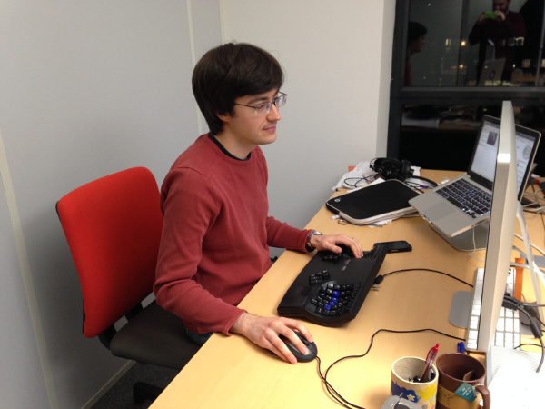
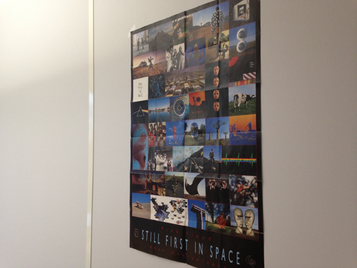

Interview RMoD #1: Damien Cassou
Interview with Damien Cassou RMoD interview
January 15, 2014
This is the first post of a series, in which I interview my colleagues of the RMoD team (in Lille, France), with the hope that I can share part of what it really means to work here.
Here's the interview of Damien Cassou. Damien and I are in the same office, and we both share a passion for anything related to Emacs, Ubuntu and Smalltalk, which often leads to animated discussions and jokes with/from others.
During the day, we listen to the same music, from one of our computers, and often go back to Atom Heart Mother when we don't agree on listening anything else.

Figure 1: Damien at work

Figure 2: Pink Floyd poster on the wall
Hi Damien, thanks for taking this interview.
First things first, could you tell me a bit about yourself?
Hi Nicolas. I'm 30 years old, I am married, and got a baby girl 10 months ago. I spent around 28 years in Bordeaux, France, where I did all my studies (from the first school at 3 to the PhD thesis at 28). Then I did a postdoc in Potsdam, Germany and one in Paris, France.
I fell in love for computers when my father taught me how to program, I was 10. I never stopped: I read all the computer books I had and I learned a lot of programming languages before entering university. Then I got a master thesis, engineering degree, and PhD in computer science. I'm now working as associate professor (maître de conférence) in RMoD and I couldn't have dreamed about a better job.
When I'm not at work, I take care of my wife (Jenny) and daughter (Sarah). I really like to walk in forests and mountains and I try to do that with them as often as I can (not often enough though). I also try to understand geopolitics, a topic I find deeply interesting.
Can you describe in a few lines what you work on at RMoD?
As associate professor half of my time is for teaching and the rest (around half as well :-)) is for searching. By searching I mean advising students, (co-)writing papers (research articles, reports, books, project proposals, etc.), attending meetings, traveling, etc.
But what I really like is developing. Recently, I've been working on Pillar and the Pharo Launcher.
You said that you couldn't dream of a better job. What is it that you like so much about it?
I really like the team. I really like Pharo. I really like the topics covered by the team (modularisation and remodularisation). I really like teaching. I really like to have time to write software. I really like the chocolat au Daim :-).
What I really like in RMoD is that we can closely collaborate with each other. Frequently, I would just sit with someone and start working with him or someone would come to my desk and work with me.
These pair-programming sessions are always a good time to learn a lot, have fun, and make huge progress. Pair-working also helps finishing tasks we don't want to work on.
How does your typical day at Inria look like?
There is no typical day: all days are different and this is another aspect I like about the job.
Sometimes I will spend my day pair-programming (for example during one of our frequent sprints). Sometimes I will spend hours writing a paper or report with a colleague. Sometimes I will spend quite some time in meetings. Sometimes I will teach for many hours and arrive in the lab when most already left. Sometimes Anne would drop by and ask me thousands of questions :-). Too often JB will just enter the office and talk about random stuff for hours :-D. Each day is different and I like nearly all of them!
What question would you ask another member of the team?
What would you change in the team to make it even more awesome?
Thank you again Damien!
comments powered by Disqus